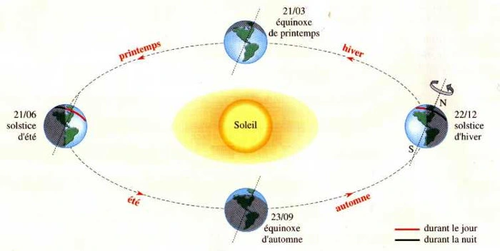
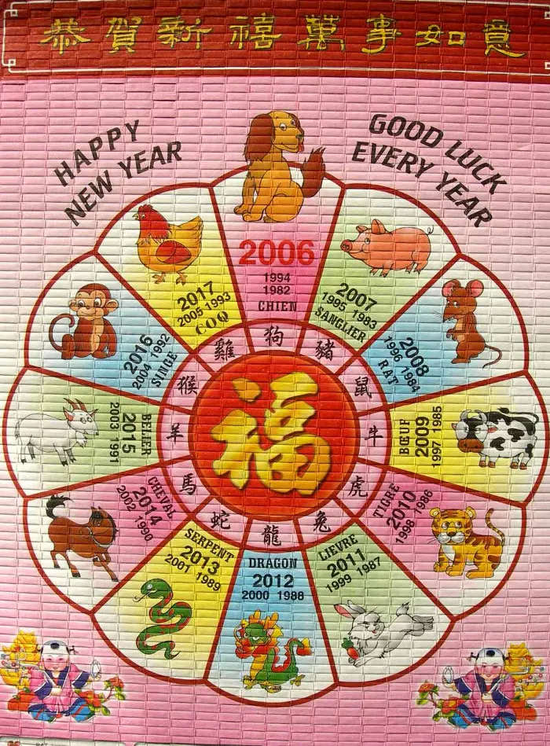
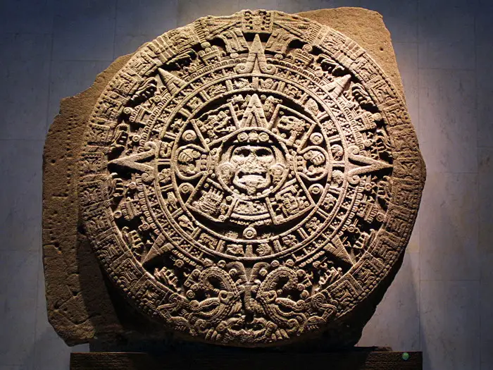
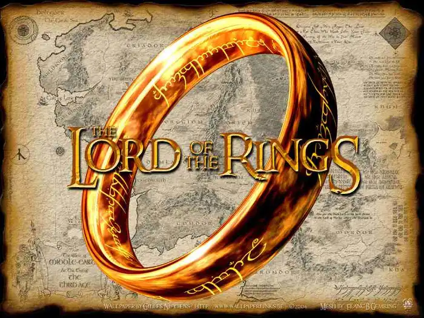
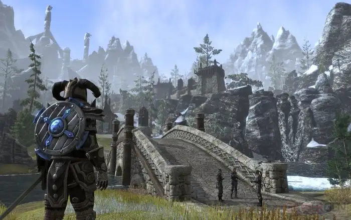

Notion de temps en fantasy
Pour partager son monde fictif, l’auteur peut fournir au lecteur des informations en plus de celles présentes dans le récit. Il peut dresser les arbres généalogiques des personnages principaux, tracer différentes cartes représentant leurs parcours, décrire le fonctionnement de leurs us et coutumes et de leurs langues, mais il peut aussi établir une chronologie des évènements importants de l’histoire du monde. Pour ce faire, il lui faut déterminer le système de « comptage » du temps qui passe et pourquoi pas établir un calendrier.
Dans la réalité
Il existe plusieurs types de calendriers dressés depuis des millénaires par différentes civilisations. Ils ont été arrangés au fil du temps et beaucoup d’entre eux sont encore utilisés de nos jours. L’idée générale des Hommes était de diviser et de mesurer le temps sur de longues périodes afin d’organiser leur vie et leurs activités, notamment l’agriculture.
Pour repérer des évènements particuliers en fonction du temps écoulé grâce à des dates, l’Homme a déterminé des unités de mesure du temps pour les retranscrire dans les calendriers comme les jours, les semaines, les mois, les saisons et les cycles lunaires.
Les évènements majeurs marquent souvent le commencement d’ères à partir desquelles peuvent débuter de nouveaux calendriers, comme par exemple l’arrivée de nouveaux Empereurs (au Japon ou en Chine).
Les jours se délimitent généralement en fonction du Soleil. Ils peuvent débuter à son lever, à son coucher, ou se compter de midi à midi.
Les semaines comptent plusieurs jours, en général 7, ce qui correspond approximativement à la durée d’une phase de la Lune.
Les mois et les saisons sont établis différemment selon le type de calendrier usité.
Les calendriers lunaires
Ils sont dressés en fonction des cycles de la Lune, observables facilement. Un mois doit durer le temps d’un cycle, soit environ 29,5 jours. Le premier calendrier romain était un calendrier lunaire. Chaque mois débutait à l’apparition de la Nouvelle Lune.
Aujourd’hui, le principal calendrier lunaire encore utilisé est le calendrier musulman. Il comporte 12 mois de 29 et 30 jours, soit une année de 354 jours. Pour se rapprocher au mieux de la durée d’un cycle lunaire, les musulmans intercalent un jour supplémentaire tous les 30 mois.
Les calendriers solaires
Une année doit correspondre à l’année tropique, à savoir le temps que met la Terre pour accomplir un tour complet autour du Soleil (environ 365,24). Cette révolution est séparée en quatre parties qui délimitent les saisons. Le jour correspond à la rotation de la Terre sur elle-même, ramenant à intervalle régulier la vision du Soleil à un même point.
Le premier calendrier solaire est le calendrier égyptien calculé en fonction de la crue du Nil. Il comptait 12 mois de 365 jours plus 5 jours intercalaires. Il était pourtant imparfait et un décalage du début de l’année a été constaté au fil du temps.
Le calendrier julien, introduit par César, a instauré les premières années bissextiles, mais il présentait toujours un décalage de 3 jours tous les 4 siècles par rapport à la révolution de la Terre autour du Soleil. Ce calendrier débute au jour de sa mise en vigueur.
C’est le calendrier grégorien (de 365 jours pour avoir un nombre entier) qui a le mieux corrigé le décalage avec l’année tropique, bien qu’il soit toujours de 3 jours tous les 10 000 ans. Il débute à la naissance du Christ. C’est le calendrier qui est utilisé actuellement en France et dans de nombreux pays occidentaux ou en développement. Dans ce type de calendrier, le découpage des mois est arbitraire, bien qu’il s’approche toujours de la durée d’un cycle lunaire. Les solstices marquent généralement le début des saisons, qui sont au nombre de 4, et l’année débute peu après le solstice d’hiver.
Dans certains pays scandinaves, il y a deux grandes saisons, l’été et l’hiver, et l’année débute le jour même du solstice d’hiver avec la fête de la mi-hiver, devenue récemment Noël.
Les calendriers luni-solaires
Il s’agit de calendriers lunaires qui s’ajustent au cycle de la révolution de la Terre autour du Soleil avec des mois intercalaires. L’année compte généralement 12 mois lunaires et un mois intercalaire afin de rattraper le décalage dans le cycle solaire. Tous les 19 ans environ, les cycles lunaires apparaissent aux mêmes dates de l’année tropique, c’est le cycle métonique (du nom de l’astronome qui a fait cette observation).
Le calendrier hébraïque moderne se base sur cette observation pour comptabiliser, sur un cycle de 19 ans, 7 années à 13 mois et 12 années à 12 mois.
Le calendrier chinois est également un calendrier luni-solaire. Il y a douze mois lunaires qui commencent à la Nouvelle Lune et, sur une période de 19 ans, 7 mois intercalaires sont ajoutés. Depuis 1929, la calendrier grégorien a été adopté dans tout le pays, mais la tradition s’est maintenue. Une année commence toujours entre le 21 janvier et le 20 février et chaque année correspond à un signe du zodiaque particulier.
Cas particulier
Le calendrier Maya est un calendrier dont on ne peut pas vraiment déterminer s’il est de type lunaire, solaire ou luni-solaire. En effet, les Mayas utilisaient deux types de calendriers, ainsi que deux systèmes de comptage du temps. Proche de l’année tropique, un des calendriers comporte 360 jours et fait état des observations solaires, vénusiennes (de Vénus) et lunaires alors que le deuxième est davantage axé sur la religion et la divination. D’après leurs croyances selon lesquelles les divinités façonneraient le monde en cycles répétitifs, leur calendrier permettrait de faire des prédictions sur le monde.
Dans la fiction
Dans un récit de fantasy, puisque le monde est fictif et qu’il ne se situe pas forcément sur la Terre que nous connaissons, il n’y a aucune obligation à compter les jours ou à disposer les saisons de la même manière que nous. D’ailleurs, avec tous les systèmes qui existent sur Terre, il y a de quoi s’inspirer. Il faut juste faire débuter l’écoulement du temps à un moment défini qui permettra d’établir des datations des évènements et de les recenser dans une chronologie cohérente. Cela permettra à l’auteur et au lecteur de situer précisément le récit dans l’évolution du monde.
Il peut exister différents systèmes de calendriers en fonction de l’endroit où les personnages se situent dans ce monde. D’une cité à l’autre, par exemple, les jours peuvent différer ou le calendrier peut débuter à des périodes différentes qui ont une importance particulière pour l’endroit.
En Terre du Milieu
L’histoire de la Terre du Milieu de J.R.R. Tolkien se découpe en plusieurs grandes parties appelées des « Âges ». Les Âges sont définis par des évènements majeurs considérés comme des tournants importants. Ils débutent tous en l’An 1. C’est le point zéro à partir duquel sont recensés les évènements qui se sont produits dans le monde.
Il existe plusieurs espèces qui utilisent leurs propres calendriers. Ceux des Semi-Hommes et des Hommes s’apparentent beaucoup au calendrier grégorien de notre monde (sans référence au Christ, évidemment). Pour les Hobbits, le calendrier débute au moment de leur arrivée dans la Comté, ce qui correspond à l’année 1601 du Troisième Âge du calendrier des Hommes.
Les Elfes possèdent également un calendrier propre, arrangé en fonction de leur longévité exceptionnelle (ainsi la base de leur calendrier correspond à 144 années de celui des Hommes).
Pour plus de précisions, de nombreux documents existent dans les différents ouvrages de J.R.R. Tolkien, notamment dans l’introduction et les appendices du Seigneur des anneaux (dans l’édition Christian Bourgois en tout cas). Cet article de Wikipédia est également assez éclairant, il résume bien les choses.
En Bordeciel
Dans Skyrim, jeu auquel il est souvent fait référence sur ce blog, la calendrier en vigueur est le Calendrier Tamrielien. Il est assez semblable au nôtre, notamment au niveau du nombre de jours dans l’année et des saisons. Il existe différentes « ères ».
Il est intéressant de constater que les jours portent des noms différents des nôtres, mais dont les consonances linguistiques sont proches. Par exemple, Morndas ressemble à Monday, tout comme Fredas à Friday ou encore Sundas à Sunday.
Les appellations des mois correspondent plus à la météo qui s’observe ordinairement à cette époque. Par exemple, Ondepluie au cours du printemps ou Hautzénith en plein été.
Conclusion
Même si le système calendaire d’un récit de fantasy se rapproche de calendriers que nous utilisons communément, il est important de l’établir clairement. Des noms correspondants à l’univers créé sont préférables à ceux que nous connaissons pour donner un côté plus fantaisiste.
Si l’auteur préfère établir un nouveau calendrier, complètement indépendant de ceux que nous connaissons, il faut qu’il soit en mesure de l’expliquer au lecteur, d’une manière ou d’une autre. Dans tous les cas, il ne faut pas oublier que le lecteur a toujours besoin de repères pour parvenir à comprendre le nouveau monde dans lequel il est immergé. Alors au travail ! Pour qu’un monde de fantasy soit opérationnel, le moindre détail compte !
Bon courage ^^